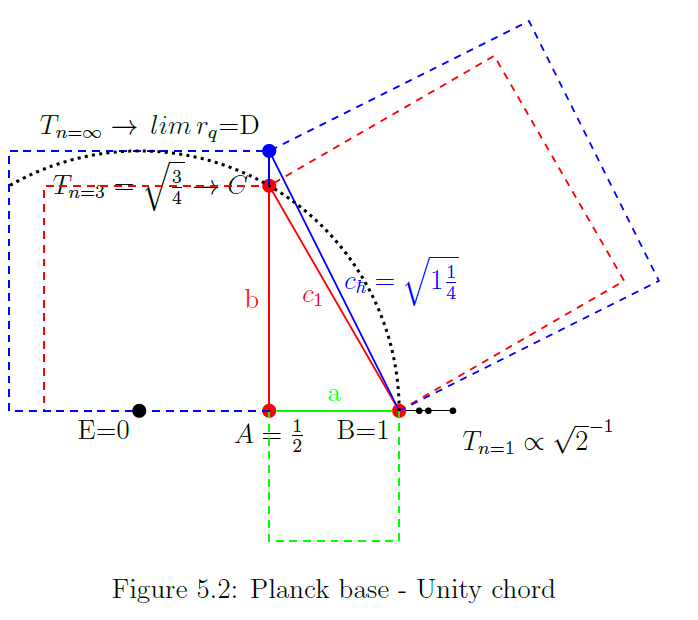
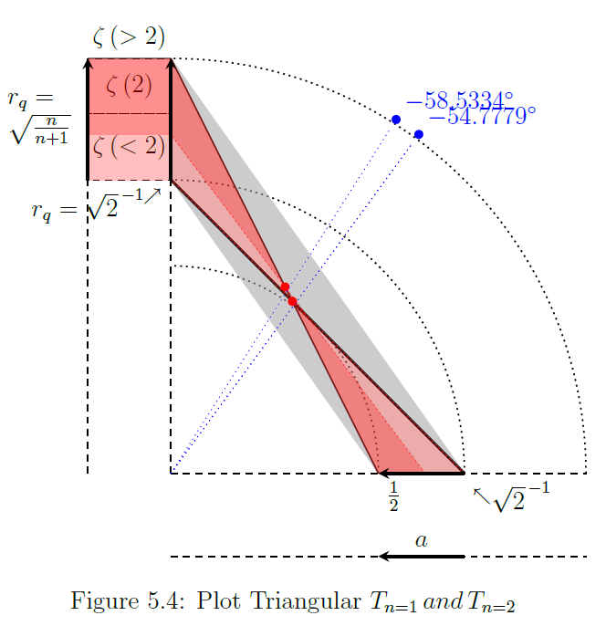
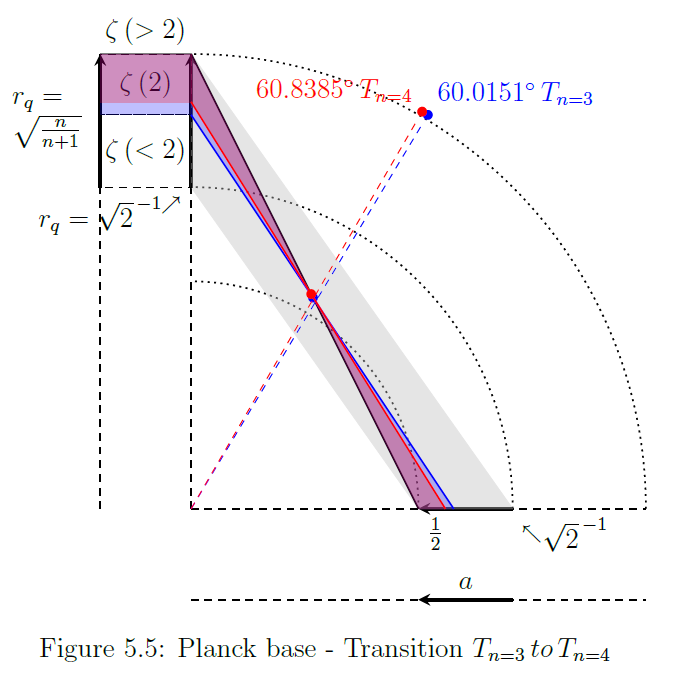
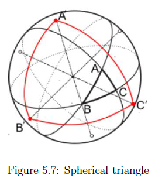
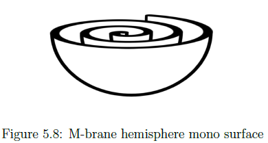

Working notebook — speculative, unfinished, not peer-reviewed.
Hexagonal chords and Planck
A hexagonal chord has the same dimensions as the radius for the circle it inscribes, $a=cos\left(\frac{\pi}{3}\right)=\frac{1}{2},$$b=\sin\left(\frac{\pi}{3}\right)$$\rightarrow c=\sqrt{a^{2}+b^{2}}=$$1$ (Figure 3.4: Primorial hexagon). In table 4.1: Discrete triangular - Continues projection plane, we find $x\rightarrow a$ and $y\rightarrow r_{q}$, where $y\rightarrow r_{q}$ by the closed formula:
Chord $c_{vesica}$ is a hexagonal chord and related to the triangular projection by the proportion of side b.
In table 4.1: Discrete triangular - Continues projection plane we find $n=3\rightarrow r_{q}=\left|\sqrt{\frac{3}{4}}\right|$.
However, because here we find $a\ne\frac{1}{2}\rightarrow a=0.5773502692$, the tuple for $n=3$ does not represent $\triangle
ABC$.
Calculating $\overline{BC}$ with this value produces $\sqrt{\left(a\right)^{2}+\left(r_{q}\right)^{2}}=1.040833\ne1$.
Side b is interesting because the absolute value $r_{q=}\left|\sqrt{\frac{3}{4}}\right|$ conforms to the scale invariant value $b=sin\left(\frac{\pi}{3}\right)$ present in $90^{\circ}\,60^{\circ}\,30^{\circ}$ hexagonal triangles.
$\triangle ABD$, with chord $c_{\hbar}$, has side b extended to $b=1$. This triangle matches the last tuple in the table, but $\triangle ABD$ does not conform to a $90^{\circ}\,60^{\circ}\,30^{\circ}$ triangle.
See table 4.1: Discrete triangular - Continues projection plane, where we find $n=\infty\rightarrow r_{q}=1$ and $a=0.5\rightarrow cos\left(\frac{\pi}{3}\right)=0.5$.
Unity chords
In the following we will abuse the Pythagorean theorem to suite our needs. The experimentally deduced value of Planck’s constant is $h=6.62607015\times10^{-34}J.s.$.
F5.02 Planck base-Unity chord]
Observe that if we counter intuitively apply the Pythagoras theorem by assuming $\overline{BC}$ as if $\overline{AC}$, then any $\angle ABC=\frac{\pi}{3}=60^{\circ}$ right angled triangle has a ratio $\sqrt{1\frac{1}{4}}=\frac{\sqrt{5}}{2}$ derived by $c_{\hbar}=$$\sqrt{\left(BC\right)^{2}+\left(AB\right)^{2}}=$$\sqrt{1^{2}+0.5^{2}}=$$\sqrt{1\frac{1}{4}}=$$\frac{\sqrt{5}}{2}$.
We find Planck’s constant by: $h=\frac{\sqrt{c_{\hbar}}\times2\pi}{\sqrt{\looparrowright}}\approx6.626091764...\rightarrow\Delta h\sim2.1728\times10^{-5}$. This is not just a mathematical coincidence and can be placed in a rigid meaningful context labeled 'Unity chords' which justifies the abuse of the Pythagorean theorem. Equation 2 gives the associated values as found in table 4.1: Discrete triangular - Continues projection plane.
In figure 5.2, this principle “Unity chord” is shown as a function of area for $T_{n}\,$ where $n\in\left\{3,\infty\right\}$. The extended part of side b, $\overline{CD}=\Delta\zeta\left(2\right)$ starts at $n=3\rightarrow r_{q=}\sqrt{\frac{3}{4}}$.
Before the extension the area $A_{\overline{AC}}=$$\overline{AC}^{2}=$$\sqrt{\frac{3}{4}}^{2}=$$\sin\left(\frac{\pi}{3}\right)^{2}$$=\frac{3}{4}$.
Then after extension $A_{\overline{AD}}=$$\overline{AD}^{2}=$$1^{2}=$$\frac{4}{4}$. The square area in figure 5.2 defined by $A_{\overline{AD}}=\frac{4}{5}$ of the square area defined by $A_{\overline{BD}}$.
Extending side b from $\overline{AC}=$$\sqrt{\frac{3}{4}}\rightarrow$$ \overline{AD}=1$ has the net effect $Area\, \frac{3}{4}:1$, a growth factor of $1\frac{1}{3}$.
That same extension for side c from $\overline{BC}=1\rightarrow \overline{BD}=\sqrt{1^2+\left(\frac{1}{2}\right)^2}$ has the net effect $Area\, \frac{3}{4}:1$, a growth factor of $1\frac{1}{4}$.
The unity chords are defined by the hypotenuses in a specific range and the associated right angled triangles are *all assumed to represent a distorted representation of a hexagonal triangle*, $\angle 60^{\circ}30^{\circ}90^{\circ}$.
In figure 5.2 the projection of $T_{n}\rightarrow a$ for $n\in\{1,2,3\}$ (the three dots to the right of coordinate 'B') seem not to fit the schema. This figure 5.2 is not the whole picture. The chords on the x-axis project in the range $a\rightarrow\left[\sqrt{2}^{\text{ -1}},\frac{1}{2}\right]$ while in figure 5.2 they all radiate from $\angle ABC$.
This is however not the case in the triangular projection, see table 4.1: Discrete triangular - Continues projection plane, the values for the y-axis slide down to up, and the values for the x-axis slide right to left.
This results, plugging in the values $a$ and $r_q$ for each tuple $\angle\theta=tan\left(\frac{r_q}{a}\right)$, in chords angled between $45^{\circ}$ and $63.43^{\circ}$ varying in length between $\sqrt{0.5 + 0.5}=1\\,$$to\\,\sqrt{1 + 0.25}$$\approx\hbar^2$.
Like a ladder up the wall
The triangular projection (table 4.1: Discrete triangular - Continues projection plane) for $n=\infty$ lists the values $a=\sqrt{2A}=0.5$ and $r_{q}=\frac{0.5}{a}=1$. In figure 5.4: Plot Triangular Tn=1 and Tn=2, two ranges are projected.
Range x-axis $a\rightarrow\left[\sqrt{2}^{\thinspace-1},0.5\right]$
Range y-axis $r_{q}\rightarrow\left[\sqrt{2}^{\thinspace-1},1\right]$
This sliding ratio defines a range for modeling the triangular projection as a succession of chord's ranging between length $\sqrt{\left(\sqrt{2}^{-1}\right)^{2}+\left(\sqrt{2}^{-1}\right)^{2}}=1$ and $\sqrt{\left(\frac{1}{2}\right)^{2}+1^{2}}=\frac{\sqrt{5}}{2}$.
Figure 5.3: Triangular numbers - (a;Rq) chord density shows both extremes and their intersection at $\sim54.74^{\circ}$. The gradient shows the chord density for $n\rightarrow[1,...,80]$ and the migration of the intersection point along the arc, which in the limit, approaches $90^{\circ}$.
F5.03 Triangular numbers-chord density
F5.04 Plot triangular Tn=1 and Tn=2
Because we assume a distorted representation of a hexagonal triangle in each case, geometrically the unity chords must have $\angle ABC=\frac{\pi}{3}=60^{\circ}$ and be part of right angled triangles with a hypotenuse $\sqrt{1\frac{1}{4}}=\frac{\sqrt{5}}{2}$, by counter intuitively application of the Pythagoras theorem by treating $\overline{BC}$ as if $\overline{AC}$ of course.
The range in which the unity chords project is wedged between $\left(a=\sqrt{2}^{\thinspace-1}, r_{q}=\sqrt{2}^{\thinspace-1}\right)\rightarrow\, T_n=1$ and $\left(a=\frac{1}{2},r_{q}=1\right)\rightarrow T_{n=\infty}$.
Observe that the only natural occurring hexagonal chord wedged between $a=0.5$ and $r_q=\sqrt{\frac{3}{4}}$ does not occur in the triangular projection as discrete interval, see table 4.1: Discrete triangular - Continues projection plane.
Note that the area enclosed for all tuples in table 4.1 comes to $\forall n\rightarrow \frac{a\times r_q}{2}=\frac{1}{4}$.
An infinite set of coordinates in between can accommodate such a chord, and therefore unity chords must exist such that; $\forall x\in\\,$$\mathbb{R}\\,$$\exists\\,$$U_{chord}\rightarrow $$ y=\sqrt{\frac{3}{4}}\leq r_{q}\leq1\\,and\\,x=\frac{0.5}{y}$
F5.05 Planck base-Transition Tn=3 to Tn=4]
For any pair of coordinates $\left(a,r_{q}\right)$ a hypotenuse exists, but only those that occur in the triangular projection, see table 4.1: Discrete triangular - Continues projection plane conform to the spatial ratio $S_{ratio}=\frac{V_{init}}{\left(\frac{V_{end}}{r_{end}}\right)}=\frac{1}{4}$, see equation 2.7 Spatial ratio.
The triangular projection defines a discrete point of equilibrium between Cartesian area and spherical surface where $A=\frac{T_n}{4n^2}\rightarrow\frac{a}{b}\pi^2$ and $A=\frac{a\times r_q}{2}=\frac{1}{4}$.
One observation is the area of the 1 by 2 rectangle and its diagonal $\sqrt{5}$. Let $c=\frac{\sqrt{5}}{2}\approx\hbar^2$ be the circumference of a sphere. Then the surface area of that sphere is $r=\frac{c}{2\pi}\rightarrow$$ SA=4\pi r^2=$$\frac{4}{10\looparrowright}=$$\left(2.5\looparrowright\right)^{\neg1}$.
In this reference frame we have an infinite series of chords $c\propto\sqrt{1\frac{1}{4}}=\frac{\sqrt{5}}{2}$, each marking an iterative step in a cycle projecting the triangular numbers,
of which the third iteration marks of the conclusion of $\zeta\left(2\right)=\frac{\pi^2}{6}$ , see figure 4.1: The sum formula.
Root 2 equilibrium
The ratio $\sqrt{1\frac{1}{4}}=\frac{\sqrt{5}}{2}$ means that for every hexagonal chord the proportionality to Planck’s constant holds. Which makes this occurrence of Planck’s constant kind of a banality.
This will be proven a feature, not a bug. In context of a $\sqrt{2}^{\thinspace-1}$ power series we find quite a unique occurrence for the unity chord. In figure 5.6: Root 2 equilibrium the tuple for n=2 in table 5.1: Hexagonal equilibrium, is depicted.
From the triangles $\triangle ABC$ and $\triangle DBE$, the triangle $\triangle ABC$ does not occur in table 4.1: Discrete triangular - Continues projection plane, as a triangular projection, but we used it in figure 5.1: Hexagonal chord versus $\hbar$ and figure 5.2: Planck base - Unity chord.
Now in figure 5.6: Root 2 equilibrium the “Unity” aspect that integrates triangle $\triangle ABC$ in the set of periodic chords as depicted in figure 5.2 comes to light by the association with triangle $\triangle DBE$.
Here the first thing to take note of, is that both triangles in this configuration are indeed hexagonal.
The angles $\angle CAB\,\,\,\,\angle EDB$ are both $90^{\circ}$ and $\angle ABC\,\,and\,\,\angle EBD$ are both $60^{\circ}$. Further, the point of origin for both triangles is B.
It is easy to see that by decreasing segment $\overline{CE}$, labeled $\Delta\zeta\left(2\right)$, will map both triangles in one to one correspondence.
We recognize the chord $\overline{BC}$ in a somewhat peculiar place for a hexagonal chord in figure 5.2, namely it is the chord $h_{init}$ between $r_{q}=\sqrt{2}^{\thinspace-1}$ and $a=\sqrt{2}^{\thinspace-1}$ that corresponds with the hypotenuse in figure 4.6: Projection plane extended zeta, at the extend of $\zeta\left(1\right)$.
This indicates that triangle $\angle ABC$ is the end phase of a cycle, in this model the hypotenuse at $\zeta\left(1\right)$ indicates a 4-fold decrement in surface area.
The chord $\overline{BE}$ on the other hand does also associate with the end of a cycle, it is the limit of the triangular cycle. See $n=\infty$ in table 4.1: Discrete triangular - Continues projection plane. The conclusion must be that both $\overline{BC}$ and $\overline{BE}$ are in fact one and the same, they stand back to back, occupy the same space, are merely separated by choice of perspective.
One way of looking at it is to assume that both triangles $\triangle ABC$ and $\triangle DBC$ are conjoined along their chords and model a spherical triangle as depicted in figure figure 5.7: Spherical triangle.
Together they can be envisioned to form $\triangle A^{\prime}B^{\prime}C^{\prime}$, but will encompass in fact the entire surface area because of the scale invariant property of volume.
This in turn will clarify again the surface area vs volume equilibrium as shown in figure 4.9: Projection plane regression. The associated surface area ratio is $SA_{\propto\hbar}=$$\left(\sqrt{2}^{\thinspace-1}\times\frac{\sqrt{5}}{2}\right)^{2}=$$\left(1.6\right)^{-1}\rightarrow$$\Delta\frac{1+\sqrt{5}}{2}\sim\looparrowright^{2}$
And the surface area of the final state confronts us with a beautiful factor 10,
The ordening of triangular numbers in the triangular plane raises the question what a number precisely entails.
In the limit $\underset{n\rightarrow\infty}{lim}T_{n}\rightarrow a=\sqrt{2A}$ consists of all natural numbers counting of all triangular numbers. This is also the case for the hypotenuse c which has exactly as many members as the sides a and b by nature of their arrangement. This makes all sides of the triangle in count of represented numbers equally sized.
We identified chords $\overline{BC}$ and $\overline{BE}$ as two expressions of one and the same chord (Figure 5.6: Root 2 equilibrium) and the process in which segment $\overline{CE}$ decreases until in the limit both triangles are in a one to one correspondence.
The moment that the chords $\overline{BC}$ and $\overline{BE}$ merge into 1, numerically a equilateral triangle $\triangle ADE$ is realized where $\overline{AE}=$$\overline{DE}=$$\overline{AD}\rightarrow$$\overline{AD}=$$\left(\overline{AB}+\overline{BD}=1\right)$.
In numerical sense this configuration resembles a $90^{\circ}$ right angled polar triangle on a spherical surface (fig. 5.7), three angles that is, total $3\times90^{\circ}=270^{\circ}$ where the area itself represents the complete count of Natural numbers.
F5.07 Spherical triangle
Such a triangle fits 8 times on the surface of a sphere and this must mean that the Surface area is a scale invariant model of volume. This clearly is the point of equilibrium, the surface area is at the point of $V_{0}\rightarrow\frac{1}{8}V_{1}$ and in the configuration as depicted in figure 4.9: Projection plane regression.
This configuration can only be depicted as a square surface area $A=\pi^{2}$ because the moment this configuration is reached, the only measure in this new state of our mathematical universe is the size of the chords spanning the surface as great circles.
And already established was that “The hypotenuse from $x=\sqrt{2}^{\thinspace-1}$ to $y=\sqrt{2}^{\thinspace-1}$ is off course $c=a\sqrt{2}=1$ and longer lines, that represent the root of a square area, do not exist in our universe.” (see subsection root-of-a-square-area).
The root of curvature
The root of curvature, or at least the sense there is such a thing as curvature, is illustrated in figure 5.6: Root 2 equilibrium. At any given moment the universe is in a state where the chords $c_{1}$ and $c_{\hbar}$ are simultaneously observable, measurable, but can only be recognized in there distinct identity as either Cartesian or part of spherical geometry. In this figure the spherical identity must be from chord $c_{\hbar}=\frac{\sqrt{5}}{2}$ because the length exceeds the maximum length feasible in our mathematical universe.
Conjoining both chords leaves us with two possible configurations to represent those chords, 1) as hypotenuse $c=\pi\sqrt{2}$ dividing the cartesian area in two, or 2) as great circle c=2pi dividing the surface area of two hemispheres.
The scale invariant ratios “square root of two” and the “circumference of a circle” are one and the same entity.
The projection plane measures $A_{\square}=\pi^{2}$ with a hypotenuse $c_{h}=\pi\sqrt{2}$.
The unit surface area is $SA=\pi^{2}$ with an associated circumference of $c_{sa}=2\pi\sqrt{\frac{\pi^{2}}{4\pi}}=\sqrt{\pi^{3}}$, and yields a ratio $\Delta_{\propto}\overset{def}{=}c_{ratio}=$$\frac{c_{sa}}{c_{h}}=$$\frac{\sqrt{2\pi}}{2}=$$1\frac{1}{4}\times\sqrt{\looparrowright}$$\Delta_{\propto}\rightarrow$$\frac{2.5}{0.8}=\frac{\pi}{\looparrowright}\rightarrow\pi=\frac{2.5}{0.8}\looparrowright$
Because a surface area is defined by $SA=4\pi r^{2}$ and this area is subdivided in 8 polar triangles the relative radius for a surface area $SA=8\pi^{2}$ is $r_{T\infty}=\sqrt{\frac{8\pi^{2}}{4\pi}}=\sqrt{2\pi}=2.5\times\sqrt{\looparrowright}$ , or with $\pi=1\rightarrow r_{T\infty}\sqrt{\frac{8}{4}}=\sqrt{2}^{\thinspace-1}$
In table 5.1: Hexagonal equilibrium the schema is based on a root 2 power series $r_{x}\left\{\dots\times\sqrt{2}^{\thinspace-1}\times\sqrt{2}^{\thinspace-1}\times\dots\right\}$ and it is the triangular number cycle irrespective of coordinate system, reference frame, that iterates in continuous perpetuity through that cycle.
In table 4.1: Discrete triangular - Continues projection plane the cycle starts with $a=\sqrt{2}^{\thinspace-1}$ and ends with $a=\frac{1}{2}$, in what seems a infinity of iterative steps reducing the radius.
A perpetual reducing radius produces a surface area that has a unique radial length for each separate surface coordinate it intersects. For regular spherical surfaces this will mean a stack of identical x and y coordinates at each unique radial distance.
It is in the continuous regression of surface area that lays a clue hinting at a 2 dimensional surface structure that wraps around a singularity, the surface asymptote found earlier.
Figure 5.8 is a model of one hemisphere of such a surface. A Cartesian flat version will be presented. The 2D surface itself stands model for a 3D space spiraling in on itself, any radius intersecting this spiral stands orthogonal on 3D space.
F5.08 M-brane hemisphere mono surface
This is a M-brane mono surface with a bulk (void) separating the surface layers wrapping over and over. The shape of the surface area of this (two hemisphere) structure, given the bulk infinitely thin and ignoring the subsurface spiral, is approaching that of a sphere.
With the singularity as center of this structure, any perfect sphere with fixed radius will cut as a ghost through this surface and only have two (2) coordinates in common with that surface, those are the conjoined surface coordinate(s) $\left\{ C,E\right\}$ and the coordinate at the absolute center B, see figure 5.6: Root 2 equilibrium.
Unity orthogonal to the sphere
Taking another look at figure 5.6: Root 2 equilibrium it becomes clear what is represented. As $\overline{CE}$ shortens $\overline{BE}$ approaches the point at which $\overline{BC}$ stands orthogonal to the surface of the sphere. As that point is reached then $\overline{BC}$ and $\overline{BE}$ share the same radius.
There is one aspect to take note of and that is the angle. $\overline{BC}$ and $\overline{BE}$ are at that point orthogonal to the surface of the sphere, however, no radius can be orthogonal to the surface of the M-brane.
A better way to look at it is that because the sphere only intersects the spiral at one point, a continuous decreasing radius will visit each coordinate at the spiral without exception.
At certain radial distances it must be the case that the shared coordinate is at the point of equilibrium, see figure 4.9: Projection plane regression and table 4.4: Zeta, the SA/Volume equilibrium. In principle the decreasing radius paints the surface of the spiral as a space filling curve, linear and missing no spot.
This is what we see expressed in figure 5.6: Root 2 equilibrium, only from that perspective it is the spheres surface being painted, after all,
we are dealing with an infinite set of orthogonal unity chords, see figure 5.2: Planck base - Unity chord for $h_{init}=h_{lim}=\frac{\sqrt{5}}{2}$. The question to ask is however, “did you not notice your radius decreasing?”